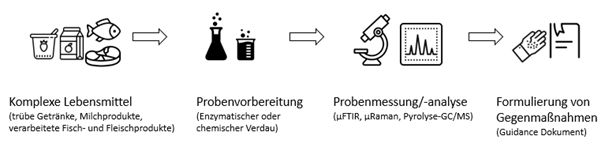

Mikroplastik in aller Munde! – Was ist dran?
Mikroplastik ist bereits in den entlegensten Regionen der Welt gefunden worden – von der Antarktis bis in die Tiefsee. Daher ist davon auszugehen, dass Mikroplastik auch in Lebensmitteln zu finden sein könnte. Im 2021 genehmigten internationalen Forschungsprojekt microplastic@food befassen sich Unternehmenspartner gemeinsam mit Wissenschaftlern damit, ob und in welchen Mengen Mikroplastik in flüssigen Lebensmitteln vorhanden ist.
Aktuelles
5.7.2023
Das Folgeprojekt MICROPLEXFOOD wurde durch die CORNET Förderstellen genehmigt! Wir freuen uns, gemeinsam mit unserem zusätzlichen Forschungspartner LVA weitere 24 Monate Ursachen von möglichem Mikroplastikeintrag in komplexen Lebensmitteln zu erforschen und Vermeidungsmaßnahmen vorzuschlagen.
8.5.2023
Im Mai 2023 wurde Dr. Elisabeth Pinter vom OFI zum „PLASTICS EUROPE'S MICROPLASTICS SCIENTIFIC WORKSHOP“ nach Amsterdam eingeladen, um die Fortschritte im Cornet Projekt „microplastic@food“ vorzustellen. Der Schwerpunkt des Workshops lag Identifikation der Eintragsquellen von Mikroplastik sowie des Nachweises in verschiedenen Umweltproben oder Lebensmitteln.
27.4.2023
Dr. Martin Löder von der Universität Bayreuth präsentierte im Rahmen der Netzwerkveranstaltung „NETmicroplastic“ Strategien zur Aufarbeitung komplexer Proben. Den Expert:innen des Sonderforschungsbereichs 1357 Mikroplastik gelingt es, durch stufenweise Reinigungsprozeduren selbst komplexe, störende Matrixstrukturen aus natürlichen Proben (Böden, Gletschereis, Lebensmitteln, Klärschlamm) abzutrennen, um schließlich Mikroplastikpartikel zerstörungsfrei quantifizieren zu können.
19.10.2022
Im Oktober 2022 fanden die Freisinger ZUKUNFTSTAGE statt. Neben spannenden Vorträgen zur Konformität von Lebensmittelverpackungen und Kreislauffähigkeit von Kunststoffen gab Dr. Elisabeth Pinter vom OFI einen Überblick zum Nachweis von Mikroplastik in einfachen und komplexeren Lebensmitteln.
1.10.2022
ACR Start-up Preis für Zusammenarbeit von Purency & OFI im Rahmen des Forschungsprojekts microplastic@food“. Das Start-up Purency GmbH und das ACR-Institut OFI – Österreichisches Forschungsinstitut für Chemie und Technik erhalten den ACR Start-up-Preis 2022 powered by aws für die Entwicklung eines Algorithmus, der Menge und Art von Mikroplastik in Lebensmitteln und Getränken anhand von spektroskopischen Imaging-Messdaten bestimmen kann.
20.9.2022
Das von Umweltbundesamt, Klimaschutzministerium und Gesundheitsministerium veranstaltete „Fachgespräch mikroPLASTIK“ am 20. September 2022 zeigte, dass eine breite Zusammenarbeit aller Stakeholder:innen ist erforderlich, um die Freisetzung von Mikroplastik in die Umwelt weiter zu reduzieren. Dr. Gabriele Eder vom OFI präsentierte den aktuellen Stand der „Methodenentwicklung für eine qualitative und quantitative Detektion von Mikroplastik in Lebensmitteln“.
30.5.2022
Die 76. ALVA-Tagung (Arbeitsgemeinschaft für Lebensmittel-, Agrar- und Veterinärwesen) stand unter dem Schwerpunkt „Makro- und Nanoplastik – vom Boden und Wasser auf den Teller“. In seiner Keynote ) sprach Prof. Dr. Christian Laforsch von der Universität Bayreuth (SFB 1375 Mikroplastik zu “Mikroplastik in der Umwelt” und erklärte, warum Plastik vom kostengünstigen Problemlöser leider zu einem Umweltproblem geworden ist.
www.alva.at/images/Publikationen/Tagungsband/Tagungsband_2022.pdf20.5.2022
Bei der Langen Nacht der Forschung gibt es immer ein vielfältiges Programm mit spannenden Experimenten aus verschiedensten Wissenschaftsdisziplinen. Im Mai 2022 war eines der rund 2.700 Themen „microplastic@food“ gewidmet. Dr. Gabriele Eder (OFI) zeigt anschaulich, woher Mikroplastik kommt und wie man es nachweisen kann.
LNFPräsentation2 OFI Eder www.ofi.at/news/lange-nacht-der-forschung-2022
20.01.2022
Im 33. Dt. Lebensmittelbrief wurde das Projekt „microplastic@food“ ausführlich vorgestellt. Bis Ende 2023 soll eine „zuverlässigen analytischen Methode für den qualitativen und quantitativen Nachweis von Mikroplastik in Lebensmitteln“ entwickelt werden.
1.7.2021
Das innovativen Forschungsprojekts „microplastic@food“ (MP1) wurde durch die CORNET Administration als förderwürdig eingestuft. Ziel ist es, bis September 2023 eine valide Methode zum qualitativen und qualitativen Nachweis von 16 Polymeren in flüssigen Lebensmitteln zu entwickeln.